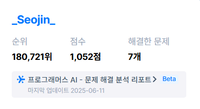

About
- 이름: 김서진
- 생년월일: 03.06.13
- MBTI: ENTJ
- 학번: 92212764
- 이메일: nafi6@naver.com
- 전화번호: 010-7124-6930
- 활동: 멋쟁이사자처럼 13기 아기사자
안녕하세요! 정보보호학과 2학년 재학중인 김서진이라고 합니다.
간단하게 제 소개를 하자면 일단 저의 개발 가치관은 "사용자의
편의" 입니다.
제가 사용자의 편의를 제 개발 가치관으로 삼은 이유는 디스코드나 토스
같이 사용자의 편의를 우선시한 개발을 보고,
실제로 사용하면서
느꼈던게 저에게 매우 인상깊다고 생각했기 때문에 이 점이 제 개발
가치관이 되었습니다.
저는 이 가치관을 이루기 위해 현재 풀스택
개발자를 목표로 하고 있고,
목표를 이루기 위해 멋쟁이 사자 13기 아기사자로 활동하거나
온라인강의, 스터디를 하는 등 다양한 노력을 하고 있습니다.
프로그래머스 문제 풀이

위 사진은 프로그래머스에서 [핸드폰 번호 가리기], [짝수와 홀수],
[X만큼 간격이 있는 n개의 숫자] 문제 등을 풀고 난 뒤의 기록 입니다.
[X만큼 간격이 있는 n개의 숫자] 문제 등을 풀고 난 뒤의 기록 입니다.
Skill
JavaScript, HTML, CSS, Java 등 다양한 웹 기술을 다룰 수 있습니다.